Code Sniffer
CodeSniffer is almost a SCA tool. It allows a set of rules or a Standard to be applied to source code.
These rules can be used to detect common programming errors or Anti Patterns, it can also be used to define a set of Coding Standards for your project.
It is down to your project to come up with some Coding Standards or apply a pre-existing set of standards for your team to adhere to.
CodeSniffer comes with a set of coding standards already defined that are regularly used by other teams.
These are:
1. MySource
2. PEAR
3. PHPCS
4. Squiz
5. Zend
Analysing your code using one or more of these standards will highlight how the code you have provided stacks up against the project’s coding standard.
How to install CodeSniffer
Step 1
Download PHP. Go to php.net and download the suitable zip folder according to your PC
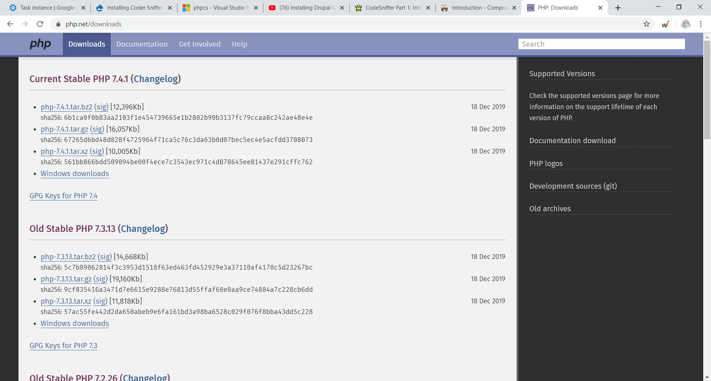
Extract the folder
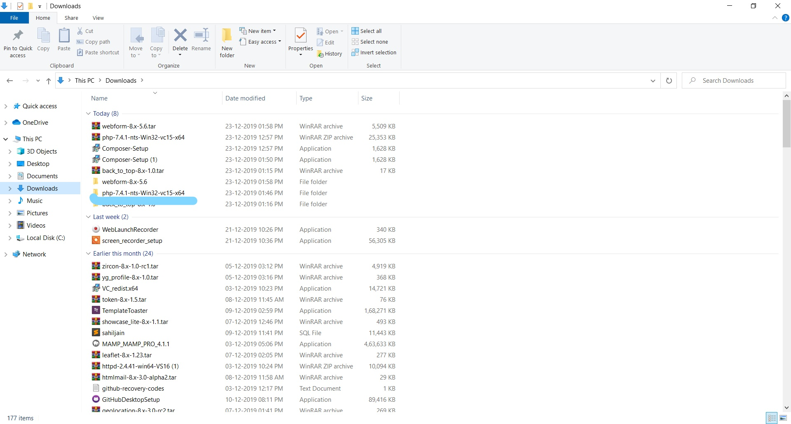
Copy all the files from the php downloaded folder
Make a new folder in the C disk and name it is php and paste all the files here
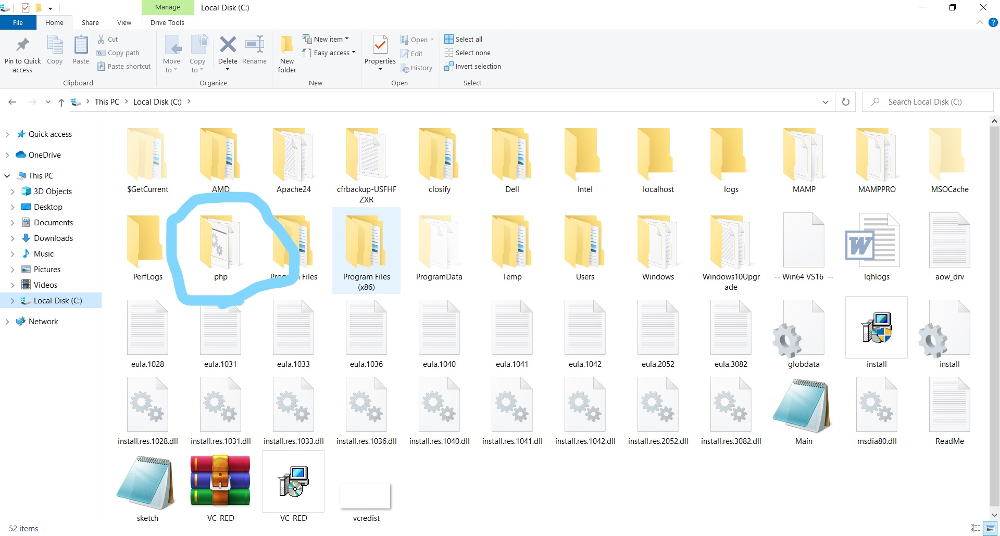
Look for the php.ini.development file and make its duplicate file and name it as php.ini
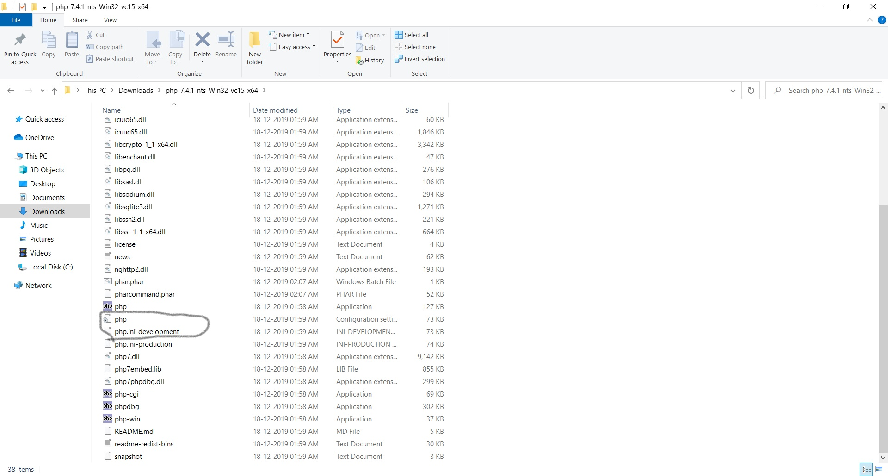
Step 2
Go to Control panel. Search for Edit the enviorment variables and click on it. Then click the enviorment variables link
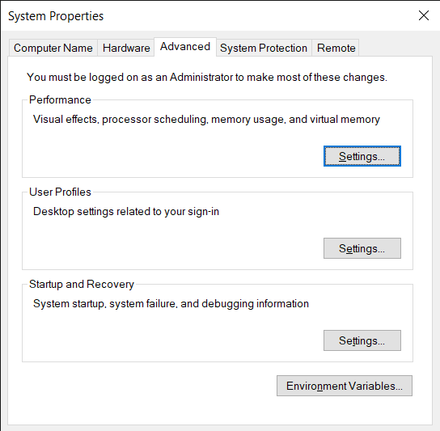
Double click on path and a new path - C:\php and click Ok.
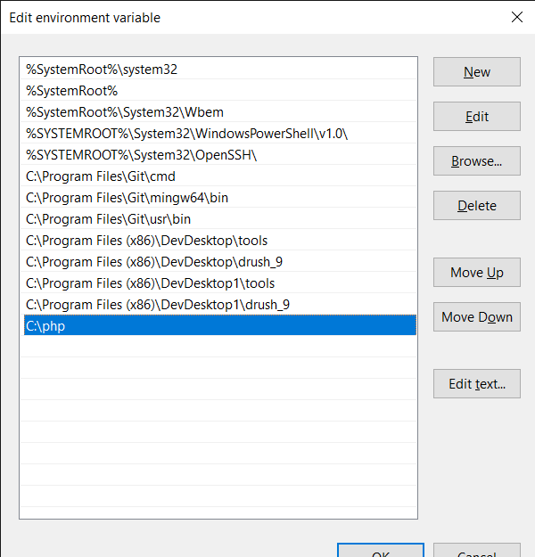
You can check whether the PHP has been installed and is working by typing-"php -v" in the Command Prompt
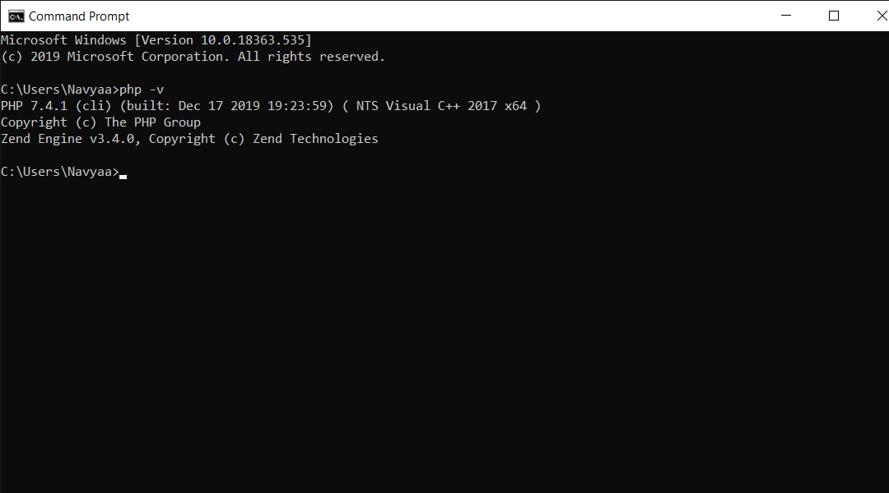
Step 3
Install Composer - https://getcomposer.org/doc/00-intro.md#installation-windows
Use the Installer method to install composer.
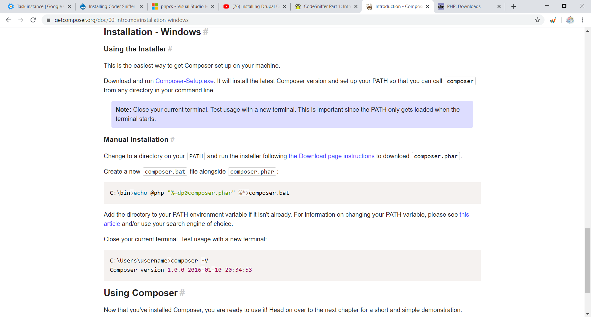
Click on the Composer-setup link and the setup will be downloaded.
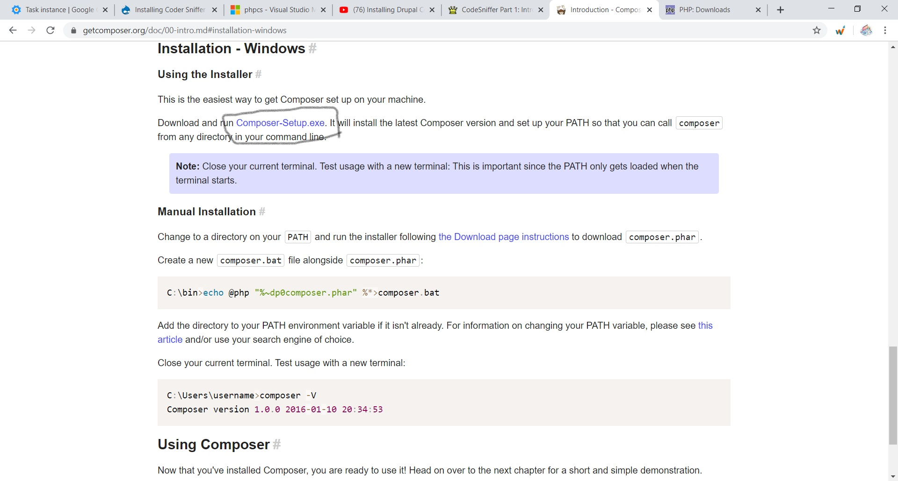
Now install the setup.
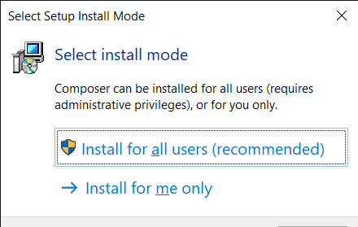
After finishing all the steps at the end click finish and setup will be installed.
Step 3
Copy this to your cmd to get the phpcs package.
composer global require squizlabs/php_codesniffer
and click enter and it will be installed.
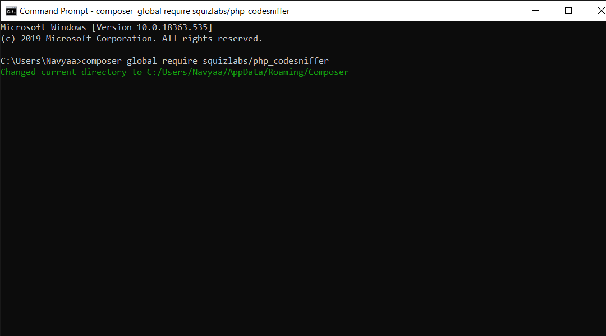
Go to vs code and search for the extension phpcs and install it.
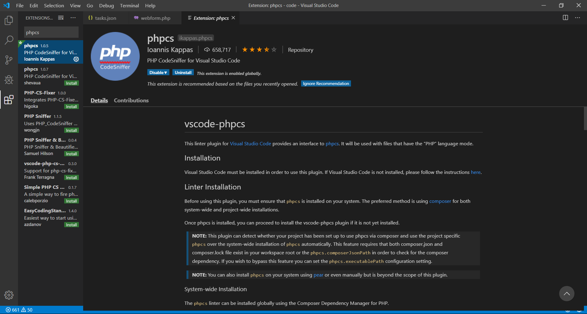
Make a folder in desktop and name it anything. Here I am naming it code.
Create another folder inside the code folder and name it as .vscode.
In the .vscode folder make a file tasks.json and add this code.
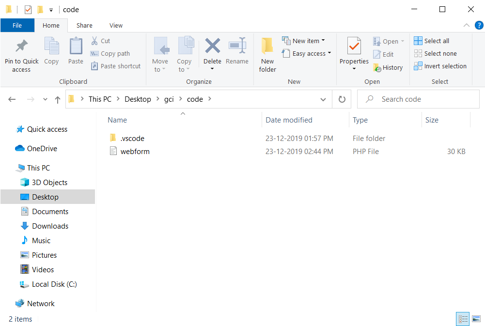
Step 3
To check it now install any of the module from drupal.org. Here I have installed webform module. Extract the folder
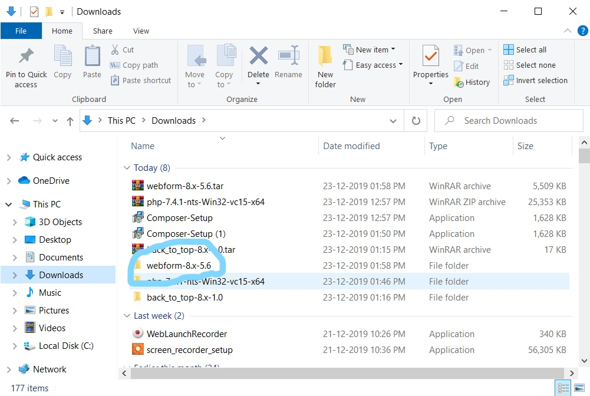
Open the folder and see for a file ending with .module and replace it with .php.
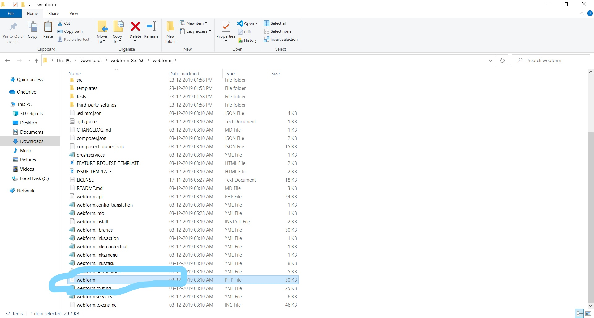
Copy this file and paste it in the code folder that we created.
in order to register to the coder standards.
1. Go to desktop, right click and open git bash and paste - composer global require drupal/coder and click enter
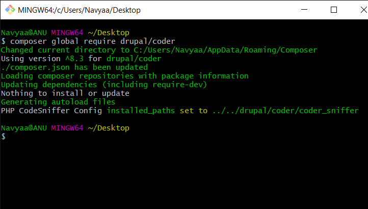
1. Now paste - composer global require dealerdirect/phpcodesniffer-composer-installer and click enter
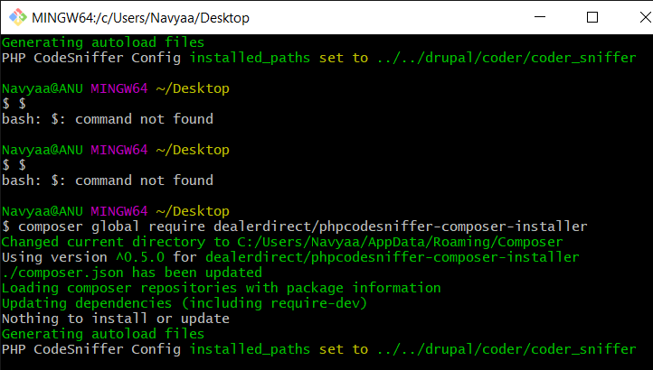
Step 4
Copy the path of the code folder that you created and paste it in the cmd - cd [path] and click enter
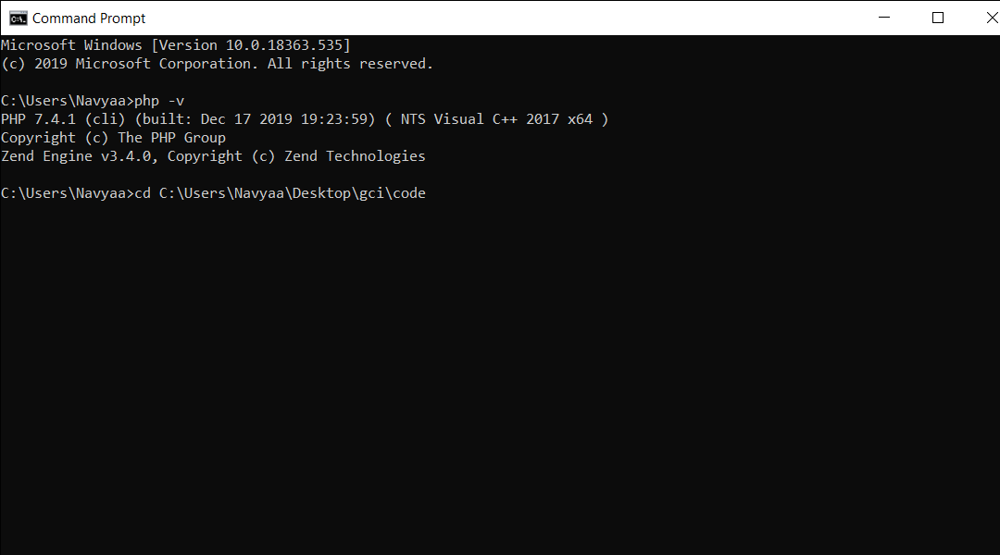
To find the errors in coding of the module type this on your cmd - "phpcs --standard=Drupal [module name].php" and click enter. It will show you the errors and warnings and yo can fix them.
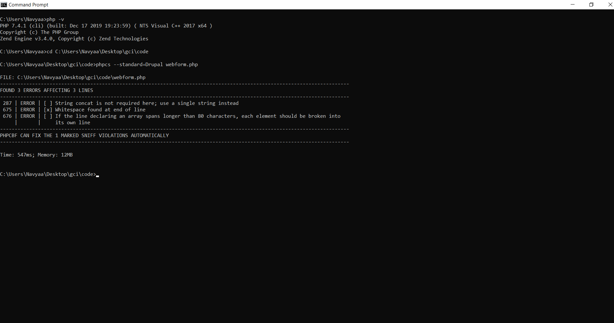